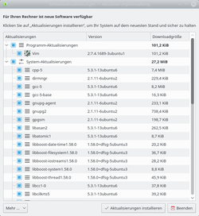

Plasma Aktualisierungsverwaltung
Dieser Artikel wurde für die folgenden Ubuntu-Versionen getestet:
Ubuntu 16.04 Xenial Xerus
Zum Verständnis dieses Artikels sind folgende Seiten hilfreich:
Die Plasma Aktualisierungsverwaltung sorgt sich um die Aktualisierung des Systems und bietet die Möglichkeit ein Upgrade (Aktualisierung von einer Ubuntuversion auf die nächste) durch zu führen.
Sie ergänzt die Programme
Plasma Discover (einfache Softwareinstallation)
Muon Paketverwaltung (Paketmanager)
Installation¶
Das Programm sollte durch die Installation eines der vorher genannten Programme bereits installiert sein. Es wird durch folgendes Paket bereit gestellt:
plasma-discover-updater (universe)
 mit apturl
mit apturl
Paketliste zum Kopieren:
sudo apt-get install plasma-discover-updater
sudo aptitude install plasma-discover-updater
Man findet das Programm unter "Anwendungen -> System -> Aktualisierungsverwaltung"
Benutzung¶
Falls es Aktualisierungen gibt, erscheint im Systemabschnitt der Kontrollleiste ein kleines Symbol. Bei verweilen des Mauszeigers über dem Symbol erscheint ein Hinweisfenster und informiert über die anstehenden Aktualisierungen.
Nach einem Klick auf das Symbol wird das Programmfenster geöffnet.
Aktualisierung¶
|  |
| Detaillierte Auflistung |
Das eigentliche Programmfenster ähnelt dem der Muon Paketverwaltung. Anstatt der Pakete und Filter werden hier aber die Aktualisierungen aufgelistet. Die Unterteilung erfolgt nach den Kategorien:
Programmaktualisierungen
Systemaktualisierungen
Standardmäßig sind alle Pakete und Kategorien zur Aktualisierung ausgewählt. Es ist jedoch möglich sowohl einzelne Pakete oder auch eine der oben genannten Kategorien abzuwählen.
Upgrade¶
Falls eine neue Ubuntuversion zur Verfügung steht, wird es direkt unterhalb der Menüleiste angezeigt. Durch klick auf "Aktualisieren" startet das Upgrade.
Falls die Upgrade-Möglichkeit nicht angezeigt wird, obwohl eine neue Ubuntuversion veröffentlicht wurde, sollte man die Einstellungen unter " Mehr -> Erweitert -> Softwarequellen einrichten" überprüfen. Nach Eingabe des Passwortes öffnet sich das Fenster „Software-Paketquellen“. Im Reiter "Aktualisierungen" kann nun beim Punkt "Release upgrade" die Einstellung "Normal Releases" vorgenommen werden. Nach einem Neustart der Aktualisierungsverwaltung sollte nun die Upgrade-Möglichkeit gegeben sein.
Links¶
Intern¶
Paketverwaltung
 - Übersicht zur Paketverwaltung unter Ubuntu
- Übersicht zur Paketverwaltung unter UbuntuSoftwareverwaltung KDE
- Übersicht über die KDE SoftwareverwaltungMuon Paketverwaltung - Paketverwaltung mit umfangreichen Optionen
- Erstellt mit Inyoka
-
 2004 – 2017 ubuntuusers.de • Einige Rechte vorbehalten
2004 – 2017 ubuntuusers.de • Einige Rechte vorbehalten
Lizenz • Kontakt • Datenschutz • Impressum • Serverstatus -
Serverhousing gespendet von